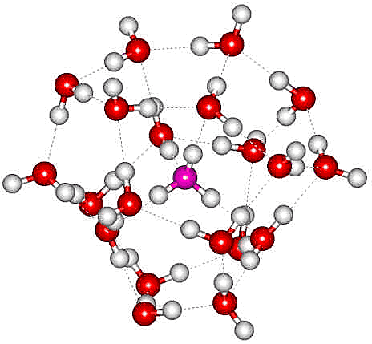
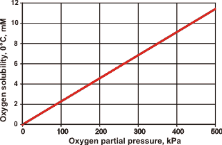
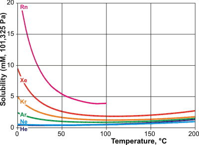
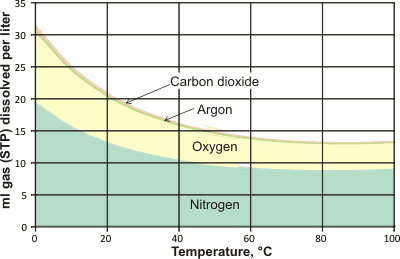

<!DOCTYPE html PUBLIC "-//W3C//DTD XHTML 1.0 Transitional//EN" "http://www.w3.org/TR/xhtml1/DTD/xhtml1-transitional.dtd">
<html xmlns="http://www.w3.org/1999/xhtml">
<head>
<meta http-equiv="Content-Type" content="text/html; charset=iso-8859-1" />
<meta http-equiv="Content-Style-Type" content="text/css" />
<meta http-equiv="Content-Script-Type" content="text/javascript" />
<meta http-equiv="Content-Language" content="en-us" />
<meta name="Description" content="Pure water and solubility" />
<meta name="author" content="martin chaplin: martin.chaplin@btinternet.com" />
<title>Pure water and solubility</title>
<script language="javascript" type="text/javascript" src="head.js"></script>

</head>
<noscript>
Your browser does not support JavaScript!
</noscript>
<head>
<link rel="shortcut icon" href="favicon.ico" type="image/x-icon" />
<link rel="ToC" href="water_structure_science.html" />
<link rel="stylesheet" href="water.css" type="text/css" />
</head>
<body onload="mm_preloadImages('images/seab1.gif','images/seab3.gif','images/seab4.gif','images/top2.gif', 'images/top3.gif')">
<a name="top" id="top"></a>
<div style="width:761px; height:93px; background-color:#006868;padding-top:3px;border:0px;margin:0px;">
  <div style="padding:0px;border:0px;margin:0px;padding-left:3px;width:140px; height:22px; background-color:#006868; float:left; display:inline;">
    <form class="quicklinkform" action="pure_water.html">
      <label for="&rdquo;menu1&rdquo;"></label>
      <select class="quicklink"
            onchange="mm_jumpMenu('parent',this,0)" name="menu1" id="&rdquo;menu1&rdquo;">
       <option  value="index.html" selected="selected">Quick links</option>
        <option value="index.html">......................................</option>
        <option value="water_molecule.html">Water molecule</option>
        <option value="water_hydrogen_bonding.html">hydrogen-bonding</option>
        <option value="water_phase_diagram.html">Phase diagram</option>
        <option value="water_vibrational_spectrum.html">Water spectrum</option>
        <option value="water_dissociation.html">Dissociation</option>
        <option value="water_anomalies.html">Anomalies</option>
        <option value="water_properties.html">Water properties</option>
        <option value="index.html">......................................</option>
        <option value="clusters_overview.html">Water clusters</option>
        <option value="protein_hydration.html">Protein hydration</option>
        <option value="hydrocolloids_gums.html">Hydrocolloids</option>
        <option value="ion_hydration.html">Ions</option>
        <option value="index.html">......................................</option>
        <option value="water_structure_science.html">Table of Contents</option>
        <option value="water_sitemap.html">Site map</option>
</select>
</form>
</div>
  <div style="padding:0px;border:0px;margin:0px; height:22px; background-color:#006868; float:left; display:inline;"><a href="search.html" onmouseout="mm_swapImgRestore()" onmouseover="mm_swapImage('search','','images/seab1.gif',1)"></a><a href="water_sitemap.html"></a><a href="https://water.lsbu.ac.uk/php-cgiwrap/water/pfp.php3?page=http://www1.lsbu.ac.uk/water/pure_water.html" onmouseout="mm_swapImgRestore()" onmouseover="mm_swapImage('printer','','images/seab4.gif',1)"  ></a><a href="add1.html"></a></div>
  <div style="padding:0px;border:0px; margin-left:3px; width:755px; background-color:#006868;">
    
    <map name="topmap" id="topmap">
    <area shape="poly" coords="322,42,429,42,429,61,322,61" href="martin_chaplin.html" title="Go to my page" alt="Go to my page" onmouseout="mm_swapImgRestore()" onmouseover="mm_swapImage('topi','','images/top3.gif',1)"  />
      <area shape="poly" coords="553,3,554,30,693,30,717,8,747,32,717,56,690,33,204,35,204,3" href="water_structure_science.html" title="Go to Water Structure and Science site contents" alt="Water Structure and Science" onmouseout="mm_swapImgRestore()" onmouseover="mm_swapImage('topi','','images/top2.gif',1)" />
</map>
</div>
</div>
<div style="width:761px; background-color:#006868;padding:0px;border:0px;margin:0px;">
  <div style="width:751px; background-image:url('images/bg.gif');margin-left:3px;padding-left:4px;border:0px;padding-top:0px;padding-bottom:0px; background-color:#FFFae2;">
    <!-- print begin -->
    <figure class="floatright">
      <figcaption>
        <p align="center">&nbsp;</p>
        <p align="center">Glacier iceberg: pure water</p>
        <p align="center">&nbsp;</p>
      </figcaption>
      </figure>
    <h1>Pure water and solubility</h1>
    <p>Water is difficult to purify as it dissolves many materials.</p>
    <p><br />
    </p>
    <p class="style16"><strong><a href="hofmeister_series.html#ionpair" title="go to section"> Ion-pairs</a></strong></p>
    <p class="style16"><strong><a href="moles_molarity_molality.html" title="go to section"> Moles, molarity, and molality</a></strong></p>
    <p><strong>  <span class="style16"><a href="pure_water.html#pure" title="go to section below">Pure water</a></span></strong></p>
    <p class="style16"><strong> <a href="pure_water.html#phobic" title="go to section">Hydrophobicity</a></strong></p>
    <p class="style16"><strong> <a href="pure_water.html#gases">The solubility of gases</a></strong></p>
    <p class="style16"><strong> <a href="pure_water.html#solub" title="go to section">Solubility</a>; <a href="pure_water.html#org">organic</a>; <a href="pure_water.html#inorg">inorganic</a></strong></p>
<p class="style16"><strong> <a href="pure_water.html#e" title="go to section">Conductivity</a></strong></p>
<p class="style16"><a href="pure_water.html#h"><strong> Henry's constant </strong></a></p>
    <p class="style16"></p>
    <p class="style16">&nbsp;</p>
    <p align="center"><em><span class="style10">Water is often called the 'Universal solvent'</span></em>&nbsp;&nbsp;&nbsp;&nbsp;&nbsp;</p>
    <h2><a name="pure" id="pure"></a>Pure water</h2>
    <p>Water may be purified by distillation, followed by deionization,<a href="water_desalination.html#reverse" title="Go to relevant Section"> reverse osmosis</a>, and activated carbon filtering (a mainly hydrophobics absorbent with large surface area; &gt; 3000 m<sup>2</sup> &#739; g<sup>&minus;1</sup>) [<a title="go to cited reference"  href="ref31.html#r3067">3067</a><a name="r3067" id="r3067"></a>]. It is challenging to obtain  pure water (for example, &lt; 
      5 ng &#739; g<sup>&minus;1</sup> solutes; &lt; 5 <a href="constants.html#ppb">ppb</a>). Distillation is expensive but can remove a wide range of contaminants, but not all. However, unexpected molecules, including ions,  can carry over, and both further contamination and microbial/algal growth can occur on subsequent storage. Deionization is necessary to reduce the conductivity to minimum values. However, deionization has poor effectiveness in removing many organic compounds, and the ion exchange columns can harbor microbial growth and  release fine particulates. Usually, combinations of purification steps are made to produce 'pure water'. Also, even 'pure' water contains nm-sized dust particles, colony-forming units (CFU), and <a href="nanobubble.html">nanobubbles</a>. Nanobubbles may be removed by extensive degassing  
      by freeze-thaw cycling under reduced pressure or (preferably) by helium washing [<a title="go to cited reference" href="ref19.html#r1825">1825</a><a name="r1825" id="r1825"></a>]. Removal of oxygen and carbon dioxide may also be achieved by saturation with oxygen-free nitrogen gas. This nitrogen may increase the aqueous clathrate formation in combination with low-pressure glow plasma  [<a title="go to cited reference" href="ref41.html#r4096">4096</a><a name="r4096" id="r4096"></a>]. Fine dust (&asymp; <a href="constants.html#unit">a</a>g) and nanoparticles are difficult to remove, but it is possible to use several distillations in wax-coated vessels (not naked glass or silica as they release fine particles). After production, pure water should be stored in appropriate vessels to avoid atmospheric gases and impurities from the atmosphere and the vessel. Autoclaving at 121&nbsp;&deg;C, 103 kPa, for 20 minutes may be used to obtain sterile water. The purest water may still contain significant amounts of impurities according to its use and storage conditions.</p>
    <p>&nbsp;</p>
    <p>There are standard specifications for the purest water normally obtainable (<abbr title="American National Standard
Federal Test Method">ASTM</abbr> D 1193). Ultra-pure water has &gt;18.0 M&Omega; &#739; cm resistivity at 25&nbsp;&deg;C (5.56 &micro;<a href="constants.html#S">S</a> &#739; m<sup>&minus;1</sup> conductivity), <sup><a href="pure_water.html#e" name="be" title="click for more information" id="be">e</a></sup> &lt; 50 &micro;g &#739; L<sup>&minus;1</sup> total organic carbon (TOC), &lt; 1 &micro;g &#739; L<sup>&minus;1</sup> Na<sup>+</sup>, &lt; 1 &micro;g &#739; L<sup>&minus;1</sup> Cl<sup>&minus;</sup>, &lt; 3 &micro;g &#739; L<sup>&minus;1</sup> silica, &lt; 10 CFU &#739; L<sup>&minus;1 </sup>; the pH is unimportant at this level of purity. The purest water, made by a combination of several processes, is   used in the manufacture of semiconductors (<abbr title="American National Standard
Federal Test Method">ASTM</abbr> D 5127) with Type E-1.2 (also called Type I+) , intended for  the most critical uses, limited by &lt; 1 &micro;g &#739; L<sup>&minus;1</sup> total organic carbon (TOC), &lt; 0.005 &micro;g &#739; L<sup>&minus;1</sup> Na<sup>+</sup>, &lt; 0.02 &micro;g &#739; L<sup>&minus;1</sup> Cl<sup>&minus;</sup>, dissolved silica 0.5 &micro;g &#739; L<sup>&minus;1</sup>, &lt;10 CFU &#739; L<sup>&minus;1</sup>, and 18.2 M&Omega;-cm resistivity. 
	
	Such water should be stored under high-purity nitrogen and may be used for processes such as polymerase chain reaction, DNA electrophoresis, HPLC, capillary electrophoresis, <em>in vitro </em>fertilization, and cell culture. Typical general laboratory 'pure' water has &gt;10.0 M&Omega;-cm resistivity (0.1 - 2 m<a href="constants.html#S">S</a> &#739; m<sup>&minus;1</sup> conductivity), &lt; 50 ng g<sup>&minus;1</sup> total organic carbon (TOC), &lt; 50 CFU &#739; ml<sup>&minus;1</sup>.  Ultra-pure water may contain <sup>12</sup>C, <sup>14</sup>N, <sup>16</sup>O, <sup>40</sup>Ar, <sup>12</sup>C<sub>m</sub>H<sub>n</sub>,  and <sup>14</sup>N <sub>m</sub>H <sub>n</sub> from atmospheric gases plus Na, Mg, Cl, Ca, Cr, Fe, Ge, Br, Sb, Ag, and I as detected by <abbr title="Inductively-coupled plasma mass-spectrometery">ICP-MS</abbr> [<a title="go to cited reference"  href="ref31.html#r3068">3068</a><a name="r3068" id="r3068"></a>]. Pure water should be protected from atmospheric contamination, particularly reactive O<sub>2</sub> and the highly soluble and acidic CO<sub>2</sub> that seriously affects pure water's electrical conductivity (ultra-pure water saturated with CO<sub>2</sub> has conductivity of 0.110 m<a href="constants.html#S">S</a> &#739; m<sup>&minus;1</sup> at 25&nbsp;&deg;C). Care should be taken on storage as ions may leach from glass, and organic materials may leach from plastics.  Characterization of a 'pure' water sample should include  electrical conductivity, the concentration of silica and common ions,  the total organic carbon concentration,  the residue after evaporation, the pH, and the optical absorbance at 254 nm. The <abbr title="National Institutes of Health">NIH</abbr> has published an <a href="https://www.orf.od.nih.gov/PoliciesAndGuidelines/Documents/DTR%20White%20Papers/Laboratory%20Water-Its%20Importance%20and%20Application-March-2013_508.pdf" title="opens new site in a pop-up window"   target="otherWin5" onclick="newWin('otherWin5')">excellent guide to laboratory water</a>.</p>
    <p>&nbsp;</p>
    <p>Note that <a href="hexagonal_ice.html"  title="go for more details">(hexagonal) ice</a>, in contrast to liquid water, is a very poor solvent and this 
      may be made use of when purifying water (for example, degassing) 
	using successive freeze-thaw cycles.  </p><figure class="floatright">
<figcaption >
<p align="center">&nbsp;</p>
<p align="center">&nbsp;</p>
<p align="center"> The H<sub>2</sub>O(H<sub>2</sub>O)<sub>20</sub> cluster; the central O-atom is shown centrally</p>
<p align="center">&nbsp;</p>
</figcaption></figure>
    <p>&nbsp;</p>
    <p> There is a question about how many solvent water molecules are required to solvate one water molecule [<a  href="ref43.html#r4254" name="r4254" title="go to cited reference" id="r4254">4254</a>]. This question has been answered by Using semi-classical spectroscopy to determine the minimal network of surrounding water molecules on quantum dynamical grounds to make a central water display the same vibrational features of liquid water. It was found that twenty water molecules were sufficient, arranged rather like the twenty molecules surrounding an H<sub>3</sub>O<sup>+</sup> in the <a href="magic.html">magic number ion</a>  [<a  href="ref2.html#r3998" name="r3998" title="go to cited reference" id="r3998">3998</a>]. </p>
   <p align="center" class="style15"> The H<sub>3</sub>O<sup>+</sup>(H<sub>2</sub>O)<sub>20</sub> magic number cluster</p>
   <p align="center" class="style15">&nbsp;</p>
<p align="center">    </p>
    <p>The central water molecule of the solvated water is tetrahedrally hydrogen-bonded to four water molecules with each of these further hydrogen-bonded to three water molecules, with a further four water molecules connecting these; the inner five water molecules have four hydrogen bonds whereas all sixteen outer water molecules possess three hydrogen bonds.</p>
    <div style=" float:none; clear:both;"></div></p> 
    <p align="right">[<a title="go to top of page" href="pure_water.html#top"><span class="style16">Back to Top&nbsp;</span></a>]</p>
    <h2><a name="phobic" id="phobic"></a>Hydrophobicity</h2>
    <p>An important factor in the solubility of organic molecules is their hydrophobicity. Compounds with lower
      polarity (i.e., greater hydrophobicity) are less able to disrupt the structure of
      the water molecules. The best measure of polarity is the
      logarithm of the partition coefficient (Log<b><i>P</i></b>) of the organic
      molecule between <em>n</em>-octanol and water [<a name="r3073" id="r3073"></a><a title="go to cited reference" href="ref31.html#r3073">3073</a>]; the higher the Log<b><i>P</i></b>, the
      more hydrophobic (nonpolar) is the compound; for example, a Log<b><i>P</i></b> = 1 means that there is a 10:1 partitioning between the organic and aqueous phases.</p>
    <p>&nbsp;</p>
    <p align="center">&nbsp;</p>
    <p align="center">&nbsp;</p>
    <p align="center" class="style15"><strong>Log<i>P</i> values of some organic compounds</strong></p>
    <div align="center">
      <center>
        <table border="2" cellpadding="2" width="471">
          <tr>
            <td width="146"><p><strong>Compound</strong></p></td>
            <td width="48" align="center"><p>&nbsp;Log<b><i>P</i></b></p></td>
            <td width="185"><p><strong>Compound</strong></p></td>
            <td align="center" width="54"><p>&nbsp;Log<b><i>P</i></b></p></td>
          </tr>
          <tr>
            <td width="146"><p>Butanone</p></td>
            <td width="48" align="center"><p>&lt;&nbsp;0.3</p></td>
            <td width="185"><p>1,1,1-trichloroethane</p></td>
            <td align="center" width="54"><p>2.8</p></td>
          </tr>
          <tr>
            <td width="146"><p>Ethyl acetate</p></td>
            <td width="48" align="center"><p>0.7</p></td>
            <td width="185"><p>Carbon
                tetrachloride</p></td>
            <td align="center" width="54"><p>2.8</p></td>
          </tr>
          <tr>
            <td width="146"><p>Butanol</p></td>
            <td width="48" align="center"><p>0.8</p></td>
            <td width="185"><p>Dibutyl ether</p></td>
            <td align="center" width="54"><p>2.9</p></td>
          </tr>
          <tr>
            <td width="146"><p>Diethyl ether</p></td>
            <td width="48" align="center"><p>0.8</p></td>
            <td width="185"><p>Cyclohexane</p></td>
            <td align="center" width="54"><p>3.1</p></td>
          </tr>
          <tr>
            <td width="146"><p>Methylene chloride</p></td>
            <td width="48" align="center"><p>1.4</p></td>
            <td width="185"><p>Hexane</p></td>
            <td align="center" width="54"><p>3.5</p></td>
          </tr>
          <tr>
            <td width="146"><p>Butyl acetate</p></td>
            <td width="48" align="center"><p>1.7</p></td>
            <td width="185"><p>Petroleum ether (60-80)</p></td>
            <td align="center" width="54"><p>3.5</p></td>
          </tr>
          <tr>
            <td width="146"><p>Di-isopropyl ether</p></td>
            <td width="48" align="center"><p>2.0</p></td>
            <td width="185"><p>Petroleum ether (80-100)</p></td>
            <td align="center" width="54"><p>3.8</p></td>
          </tr>
          <tr>
            <td width="146"><p>Benzene</p></td>
            <td width="48" align="center"><p>2.0</p></td>
            <td width="185"><p>Dipentyl
                ether</p></td>
            <td align="center" width="54"><p>3.9</p></td>
          </tr>
          <tr>
            <td width="146"><p>Chloroform</p></td>
            <td width="48" align="center"><p>2.2</p></td>
            <td width="185"><p>Heptane</p></td>
            <td align="center" width="54"><p>4.0</p></td>
          </tr>
          <tr>
            <td width="146"><p>Tetrachloroethylene</p></td>
            <td width="48" align="center"><p>2.3</p></td>
            <td width="185"><p>Petroleum ether (100-120)</p></td>
            <td align="center" width="54"><p>4.3</p></td>
          </tr>
          <tr>
            <td width="146"><p>Toluene</p></td>
            <td width="48" align="center"><p>2.7</p></td>
            <td width="185"><p>Hexadecane</p></td>
            <td align="center" width="54"><p>8.7</p></td>
          </tr>
        </table>
        <p>&nbsp;</p>
      </center>
    </div>
    <p>Log<b><i>P</i></b> values increase by
      about 0.52 for every methylene group (-CH<sub>2</sub>-) added in a homologous
      series. Thus, the Log<b><i>P</i></b> of hexanol is that of butanol (0.8) plus
      2 &#739; 0.52 (i.e., approximately 1.8). In order to gather a more efficient use of lipophilicity in the intramolecular hydrogen-bonding of potential drugs, a more apolar organic  partition system utilizing toluene rather than octanol may be used [<a title="go to cited reference" href="ref35.html#r3425">3425</a><a name="r3425" id="r3425"></a>]. </p>
    <p>&nbsp;</p>
    <p>Adding cosolvents, <a href="hydrophobic_hydration.html#hydrotrope">hydrotropes,</a> and surfactants can dramatically increase the solubility of hydrophobic molecules by the incorporation of solutes into micelles,  the enlargement of micelles, and the reduction of critical micelle concentrations [<a title="go to cited reference"  href="ref43.html#r4297">4297</a><a name="r4297" id="r4297"></a>]</p>
    <p>&nbsp;</p>
    <p align="right"> [<a title="go to top of page" href="pure_water.html#top"><span class="style16">Back to Top&nbsp;</span></a>]</p>
    <hr />
    <h2><a name="gases" id="gases"></a>The solubility of gases</h2>
    <p align="center" class="style10">the amount of dissolved gas is proportional to its partial pressure in the gas phase</p>
    <p align="right">&nbsp;&nbsp;<span class="style4">William Henry, 1803&nbsp;<sup><a href="pure_water.html#c" name="bc" title="click for more information" id="bc"> c</a></sup>&nbsp;</span></p>
    <p align="right"><span class="style4">&nbsp; </span></p>
    <figure class="floatright">
      <figcaption>
        <p align="center">Equilibrium solubility of oxygen under pressure</p>
        <p align="center" class="style4">from [<abbr title = "International Assosiation for the Properties of Water and Steam"> <a href="http://www.iapws.org/relguide/HenGuide.pdf" title="opens new site in a pop-up window"   target="otherWin6" onclick="newWin('otherWin6')">IAPWS</a> </abbr>]</p>
      </figcaption>
      </figure>
    <p>Dissolved gases are often mistakenly ignored in aqueous solutions, although they may impart properties different from  pure water [<a title="go to cited reference"  href="ref44.html#r4347">4347</a><a name="r4347" id="r4347"></a>]. At equilibrium, molecules of the solute in the gas phase enter the liquid phase at the same rate as molecules of the solute in the liquid phase escape to the gas phase. nonpolar gases are poorly soluble in water, with their equilibrium solubility  proportional to their partial pressure (p, <a href="water_activity.html#fug">fugacity</a>), see right. The  partial pressure is the pressure that that gas would exert in a mixture of  gases if it occupied the same volume on its own.</p>
    <p>&nbsp;</p>
    <p>Solubilities are measured in terms of their  <a href="moles_molarity_molality.html#mole">mole fraction</a> (x<sub>2</sub>); </p>
    <p>&nbsp;</p>
    <p align="center">x<sub>2</sub> = moles solute/(moles water + moles solute)</p>
    <p>&nbsp;</p>
    <p>Equilibrium solubilities are often described by the use of the <a href="pure_water.html#h">Henry's Law constant </a>at a specified temperature (, high Henry's constant = high volatility= low solubility; often a cause of confusion as other definitions occur in the literature. It has been recommended that the Henry's constant used here, and in much of the historical literature, should be alternatively be called Henry's volatility) where Henry's Law states that </p>
    <p>&nbsp;</p>
    <p align="center"></p>
    <p align="left">&nbsp;</p>
    <p align="left">More precisely  is defined as </p>
    <p align="center"></p>
    <p align="center">&nbsp;</p>
    <p align="left">where f<sub>2</sub> and x<sub>2</sub> are the <a href="water_activity.html#fug">fugacity</a> (effective partial pressure) and mole fraction of the solute, respectively (<abbr title = "International Assosiation for the Properties of Water and Steam"><a href="http://www.iapws.org/relguide/HenGuide.pdf" title="opens new site in a pop-up window"   target="otherWin6" onclick="newWin('otherWin6')">IAPWS</a></abbr>). In this case, the units used for  Henry's constant are Pa. <sup><a href="pure_water.html#f" name="bf" title="click for more information" id="bf"> f</a></sup> Conversion factors for other (equally valid) Henry's constant definitions have been tabulated, together with a large number of Henry's constants for various gases [<a title="go to cited reference" href="ref35.html#r3406">3406</a><a name="r3406" id="r3406"></a>]. Whatever constants are used, the solubility of the gas can be calculated given its partial pressure. Henry's Law, although not an exact law, can be used for converting solubility data from the experimental pressure to unit atmosphere partial gas pressure, provided the mole fraction of the gas in the liquid is small and that the difference in pressures is small. As an example, the solubility of oxygen at 101.325 Pa oxygen partial pressure and 25&nbsp;&deg;C is a mole fraction of 2.301  &#739; 10<sup>&minus;5</sup> ( = 4.4038   &#739; 10<sup>9</sup> Pa) [<a title="go to cited reference" href="ref42.html#r4120">4120</a><a name="r4120" id="r4120"></a>].</p>
    <p align="left">&nbsp;</p>
    
    <figure class="floatright">
      <figcaption>
        <p align="center">Equilibrium solubility of gases with temperature</p>
        <p align="center" class="style4">from [<abbr title = "International Assosiation for the Properties of Water and Steam"> <a href="http://www.iapws.org/relguide/HenGuide.pdf" title="opens new site in a pop-up window"   target="otherWin6" onclick="newWin('otherWin6')">IAPWS</a> </abbr>]</p>
      </figcaption><p align="left">&nbsp;</p>
    </figure>
    <p>Most solid solutes dissolve more in water as the temperature is raised. However, while most gaseous solutes also dissolve more in most solvents as the temperature is raised, nonpolar gases are much more soluble in water at lower temperatures than would be expected from their solubility behavior at high temperatures (see right and anomaly<a href="material_anomalies.html#min"> M7</a>). </p>
    <p>&nbsp;</p>
    <p>It may also be seen from the solubility profiles (right) that the gases are relatively somewhat soluble even up to 100&nbsp;&deg;C, in contrast to the common mistaken belief that aqueous solutions are efficiently degassed at high temperatures.</p>
    <p>&nbsp;</p>
    <p>Somewhat surprisingly, no inflections have been found in the solubility data around the density maximum at &asymp; 4&nbsp;&deg;C [<a title="go to cited reference" href="ref35.html#r3403">3403</a><a name="r3403" id="r3403"></a>].</p>
    <div style=" float:none; clear:both;"></div>
    <figure  class="floatleft">
      <figcaption>
        <p align="center">&nbsp;</p>
        <p align="center">The solubilities for the noble gases, from [<a href="http://www.iapws.org/relguide/HenGuide.pdf" title="opens new site in a pop-up window"   target="otherWin2" onclick="newWin('otherWin2')">IAPWS</a>, <a title="go to cited reference" href="ref12.html#r1166">1166</a>]</p>
      </figcaption>
      </figure>
    <p align="left">&nbsp;</p>
    <p align="left">The solubilities of the noble gases are shown opposite [<a href="http://www.iapws.org/relguide/HenGuide.pdf" title="opens new site in a pop-up window"   target="otherWin2" onclick="newWin('otherWin2')">IAPWS</a>, <a title="go to cited reference" href="ref12.html#r1166">1166</a><a name="r1166" id="r1166"></a>]. Their hydration may 
      be considered as the sum of two processes: (A) the endothermic opening 
      of a clathrate pocket in the water, and (B) the exothermic placement 
      of a molecule in that pocket due to the multiple <a href="hydrogen_bonds.html#b" title="go for more information">van der Waals</a> dispersion interactions (for example,  krypton dissolved in water is surrounded by a clathrate cage with 20 Kr&middot;&middot;&middot;OH<sub>2</sub> such interactions  [<a title="go to cited reference" href="ref14.html#r1357">1357</a><a name="r1357" id="r1357"></a>]). In water at low temperatures, the energy required 
      by the process (A) is minimal as such pockets may be easily formed 
      within the water clustering (by <abbr title="Collapsed icosahedral water cluster structure"><a title="go to 'Water clusters' page"  href="icosahedral_water_clusters.html#CS">CS </a></abbr><abbr title="Expanded icosahedral water cluster structure"><a title="go to 'Water clusters' page"  href="icosahedral_water_clusters.html#ES"> ES</a></abbr>). </p>
    <p align="left">&nbsp;</p>
    <p align="left">Using the noble gases to investigate the solvation of nonpolar gases is useful as they are spherically symmetrical and have low polarizability, whereas shape and polarizability  may confuse the hydration of other gases.
      The solubility of the noble gases increases considerably as the temperature is lowered. Their enthalpy and entropy of hydration become more negative as their fit into the water dodecahedral clathrate improves. </p>
    <figure class="floatright">
      <figcaption>
        <p align="center">&nbsp;</p>
        <p align="center">Equilibrium solubility of gases from the air, ml, STP</p>
        <p align="center" class="style4">from [<abbr title = "International Assosiation for the Properties of Water and Steam"> <a href="http://www.iapws.org/relguide/HenGuide.pdf" title="opens new site in a pop-up window"   target="otherWin6" onclick="newWin('otherWin6')">IAPWS</a> </abbr>]</p>
      </figcaption>
      </figure>
    <p>&nbsp;</p>
    <p>Under pressure of 101,325 Pa of each gas, the solubilities of the following atmospheric gases <sup><a href="pure_water.html#i" name="bi" title="click for more information" id="bi">i</a></sup> at 0&nbsp;&deg;C are:  nitrogen 1.11 mM, oxygen 2.31 mM, carbon dioxide 77.6 mM,  argon 2.51 mM, neon 0.603 mM, helium 0,457 mM, methane 2.61 mM, krypton 5.05 mM, hydrogen 1.07 mM, carbon monoxide 1.71 mM, xenon 10.32 mM. At equilibrium with air at 25&nbsp;&deg;C and under the atmospheric pressure of 101.325 kPa, the following concentrations of the atmospheric gases are present in water: nitrogen 0.549 mM, oxygen 0.288 mM, carbon dioxide 14.3 &micro;M,  argon 14.1 &micro;M, neon 9.05 nM, helium 2.25 nM, methane 2.71 nM, krypton 3.10 nM, hydrogen 0.454 pM, carbon monoxide 0.158 pM, xenon 4.07 pM (see right, <abbr title = "International Assosiation for the Properties of Water and Steam"> <a href="http://www.iapws.org/relguide/HenGuide.pdf" title="opens new site in a pop-up window"   target="otherWin6" onclick="newWin('otherWin6')">IAPWS</a> </abbr>). The solubilities of the inert gases are given in more detail <a href="material_anomalies.html#min">elsewhere</a> as are those of <a href="co2.html#co">carbon dioxide and carbon monoxide</a>.</p>
    <div style=" float:none; clear:both;"></div>
    <figure  class="floatleft">
      <figcaption>
        <p align="center">The solubility of methane under high pressure,</p>
        <p align="center" class="style4"> from  [<a title="go to cited reference" href="ref35.html#r3407">3407</a>]</p>
      </figcaption>
       </figure>
    <p align="left">&nbsp;</p>
    <p align="left">&nbsp;</p>
    <p align="left">It should be noted that Henry's law only applies under equilibrium conditions in dilute solutions (&lt;~1% w/w). Also, the data has usually been obtained in pure water, and other solutes may interfere if they interact with the solute at issue. The solubility of gases diverges from Henry's Law above about one MPa. At very high pressures (see that for methane left), there may be a transformation into clathrate hydrates of filled ices   [<a title="go to cited reference" href="ref35.html#r3407">3407</a><a name="r3407" id="r"></a>]. It is expected that other gases such as O<sub>2</sub> and N<sub>2</sub> behave similarly.</p>
    <p align="left">&nbsp;</p>
    <p align="left">The effect of salts on the solubility of gases has been investigated [<a title="go to cited reference" href="ref41.html#r4062">4062</a><a name="r4062" id="r4062"></a>]. Mostly the salts 'salted-out' the gases. The general relationship was,</p>
    <p align="left">&nbsp;</p>
    <p align="center">log(C<sub>G,0</sub>/C<sub>G</sub>) = K<sub>S</sub> &#739; C<sub>S</sub></p>
    <p align="center">&nbsp;</p>
    <p align="left">&nbsp;</p>
    <p align="left">where C<sub>G</sub> is the solubility of a sparingly soluble gas (e.g., O<sub>2</sub>, C<sub>2</sub>H<sub>4</sub>, CO<sub>2</sub> ) compared with that in pure water, C<sub>G,0</sub> in the presence of salt of concentration concentration C<sub>S</sub>. K<sub>S</sub> is the 'Sechenov constant', specific to the gas and the salt and with a weak dependence on the temperature.    </p>
    <p align="right">[<a title="go to top of page" href="pure_water.html#top"><span class="style16">Back to Top&nbsp;</span></a>]</p>
    <div style=" float:none; clear:both;"></div>
    <h2><a name="solub" id="solub"></a>The solubility of solids </h2>
    <p> Solubility is the capacity of a  solute to dissolve in a solvent. Traditionally water arranged around a solute 'belongs' to the bulk water. However, it is now realized that some of this water may be 'bound' to the solute and should not be treated as bulk water but as part of the solute. Generally, this 'bound' water may be defined as water bound to solutes with energies greater than about 56 kJ    &#739; mol<sup>&minus;1</sup> at 25&nbsp;&deg;C, which is the average binding energy of water molecules binding to other waters; &equiv; two hydrogen bonds [<a  title="go to cited reference" href="ref41.html#r4100">4100</a>, <a  title="go to cited reference" href="ref42.html#r4102">4102</a><a name="r4102" id="r4102"></a>]. For a review of aqueous solubility prediction, 
      see [<a title="go to cited reference"  href="ref8.html#r744">744</a><a name="r744" id="r744"></a>]. The equilibrium solubility depends in a complex manner on the molecular properties of the solute, any cosolute(s) including their concentration(s), solvent and any cosolute(s) including their concentration(s), as well as the temperature, pressure,  pH, <a href="water_dissociation.html#o">ionic strength</a>, and sometimes on other factors. Solubilities are challenging to predict  quantitatively. The rules for expressing solubility vary as; <span class="style6">soluble</span>, greater than 33 g dissolves in a liter; <span class="style6">slightly soluble</span>, from 1 g to 33 g dissolves in a liter, and <span class="style6">practically insoluble</span>, less than 1 g dissolves in 10 liters.</p>
    <p>&nbsp;</p>
    <p>The excellent solvent properties of water, together with its non-toxic nature, make water a preferred solvent for many chemical reactions [<a title="go to cited reference"  href="ref16.html#r1566">1566</a><a name="r1566" id="r1566"></a>]. It has been shown that aqueous solvation takes place in two stages; a rapid partial water rearrangement (&lt; ps) counteracting the polarity of the solute but building up a strain within the water's hydrogen-bonding, followed by a slower relaxation  (&gt; ns) of this hydrogen-bonding involving reorientation of some of the water molecules  [<a title="go to cited reference"  href="ref34.html#r3389">3389</a><a name="r3389" id="r3389"></a>]. </p>
    <p>&nbsp;</p>
    <p> Several factors determine aqueous solubility: (1) the crystallinity of the solute, (2) the interactions between the solute and water, (3) any ionization, dissociation, and stability issues, (4) the temperature and (5) the ionic strength and cosolutes. Hydrophilic organic compounds containing several oxygen atoms or nitrogen atoms are generally soluble in water, particularly if they possess positive and negative charges. This is due to their strong interactions with water molecules. At high concentrations, the solute may form soluble aggregates to various extents that can be compared by the use of molecular dynamics and graph theory  [<a title="go to cited reference"  href="ref34.html#r3371">3371</a><a name="r3371" id="r3371"></a>].    </p>
    <p>&nbsp;</p>
    <p><strong><a name="org" id="org"></a>Organic compounds</strong></p>
    <p>&nbsp;</p>
    <p>The hydration free energies of neutral molecules may be estimated  [<a  href="ref37.html#r3698"  name="r3698" title="go to cited reference" id="r3698">3698</a>] , with solubility of organic molecules estimated from the general solubility equation [<a title="go to cited reference"  href="ref31.html#r3078">3078</a><a name="r3078" id="r3078"></a>]</p>
    <p>,</p>
    <p align="center">log<em><strong>S</strong></em> = 0.5 - 0.01   &#739; (<strong>MPt - </strong>25) - Log<b><i>P</i></b></p>
    <p align="center">&nbsp;</p>
    <p>where <em><strong>S</strong></em> is the molar aqueous solubility, <strong>MPt</strong> is the melting point in&nbsp;&deg;C, and Log<b><i>P</i></b> is derived from the octanol-water partition coefficient of the solute [<a title="go to cited reference"  href="ref31.html#r3077">3077</a><a name="r3077" id="r3077"></a>]. If <strong>MPt</strong> &lt; 25&nbsp;&deg;C, the term (<strong>MPt - </strong>25) is set to zero. This equation can also be used for weak acids (so long as pK<sub>a </sub>+ log<em><strong>S</strong></em> &le; 0) and bases (so long as p<em>K</em><sub>a</sub> - log<em><strong>S</strong></em> &le; 14). This covers most weak electrolytes  [<a title="go to cited reference"  href="ref31.html#r3079">3079</a><a name="r3079" id="r3079"></a>].</p>
    <p>&nbsp;</p>
    <p>Often, changes to the solubility of  pharmaceuticals are of real benefit; particularly to allow the dissolution of the targeted dose. The general solubility equation can be used together with the known changes in Log<b><i>P</i></b> and <strong>MPt</strong> with minor structural changes to predict the most valuable changes in the structure required [<a title="go to cited reference"  href="ref31.html#r3074">3074</a><a name="r3074" id="r3074"></a>].</p>
    <p>&nbsp;</p>
    <p><strong><a name="inorg" id="inorg"></a>Inorganic salts</strong> <strong>and common ion effects</strong></p>
    <p>&nbsp;</p>
    <p>The small molar volume and high permittivity of water contribute to water's high dissolving power for salts as they reduce the attractive Coulombic forces between oppositely charged ions and allow multiple stabilizing interactions between the dissolved ions and the water molecules. Inorganic salts are often classified as soluble, sparingly soluble, or insoluble, although all are soluble in water to some extent,  even if they may be minimal. There are no strict limits for the solubility nomenclature but, generally, soluble salts have solubilities above about 0.1 M, whereas insoluble salts have solubilities below about one mM. </p>
    <p>&nbsp;</p>
    <p>The solubility product (<em>K<sub>sp</sub></em>) is the product of the <a href="moles_molarity_molality.html">molar concentrations</a> of the ions in a saturated solution. It depends on the crystal structure of the undissolved salt. Due to the common ion effect, increasing the anion concentration will reduce the cation concentration and <em>vice versa.</em> As an example, the <em>K<sub>sp</sub></em> of iron(III) hydroxide Fe(OH)<sub>3</sub> is 2.79  &#739; 10<sup>&minus;39</sup> M<sup>4</sup> = [Fe<sup>3+</sup>]  &#739; [OH<sup>&minus;</sup>]  &#739; [OH<sup>&minus;</sup>]  &#739; [OH<sup>&minus;</sup>] and that of iron(II) hydroxide Fe(OH)<sub>2</sub> is 1.4  &#739; 10<sup>&minus;15</sup> M<sup>3</sup> = [Fe<sup>2+</sup>]  &#739; [OH<sup>&minus;</sup>]  &#739; [OH<sup>&minus;</sup>]. Thus, the solubility depends on the pH. The cations<a href="hofmeister_series.html#ionpair"> ion-pair</a> to hydroxide, however, with both FeOH<sup>2+</sup><sub>(aq)</sub> 6% and Fe(OH)<sub>2</sub><sup>+</sup><sub>(aq)</sub> being formed. Without considering this ion-pairing, at pH = 7 there would be 2.79  &#739; 10<sup>&minus;18</sup> M iron(III) or 0.14 M iron(II) in saturated solutions with the ferrous ions appearing far more soluble than the ferric ions. However, due to <a href="hofmeister_series.html#ionpair">ion-pair</a> formation, hydrolysis, complex ion formation, and ion-water complexes, there are only a few cases in which solubility and <em>K<sub>sp</sub></em> are related in such a simple way  [<a title="go to cited reference"  href="ref31.html#r3076">3076</a><a name="r3076" id="r3076"></a>]. </p>
    <p>&nbsp;</p>
    <p>With metal hydroxides having widely different solubilities, they can often be separated from each other by changing the pH, with one cation precipitating at a particular pH while the other remains in solution. Many metal hydroxides are amphoteric, with the precipitated solid hydroxides redissolving in excess hydroxide ion, </p>
    <p align="center"> Al(OH)<sub>3 </sub><sub>(s, ppt)</sub> + OH<sup>&minus;</sup><sub>(aq, pH  &gt;12)</sub> &rarr; Al(OH)<sub>4</sub><sup>&minus;</sup><sub>(aq)</sub> &nbsp;&nbsp;&nbsp;&nbsp;&nbsp;&nbsp;&nbsp;&nbsp;&nbsp;&nbsp;&nbsp;&nbsp;&nbsp;&nbsp;<sup><a href="pure_water.html#b" name="bb" title="click for more information" id="bb"> b</a></sup></p>
    <p align="center">&nbsp;</p>
    <p>Some  rules concerning inorganic salt solubilities are</p>
    <p>&nbsp;</p>
    <ul>
      <li>Salts containing Group I elements  (Li<sup>+</sup>, Na<sup>+</sup>,  K<sup>+</sup>, Cs<sup>+</sup>, Rb<sup>+</sup>) or the ammonium  ion (NH<sub>4</sub><sup>+</sup>) are soluble, usually with little <a href="hofmeister_series.html#ionpair">ion-pairing</a>. Exceptions to this rule are rare. </li>
      <li>Salts containing nitrate  (NO<sub>3</sub><sup>&minus;</sup>), acetate (CH<sub>3</sub>CO<sub>2<sup>&minus;</sup></sub>), chlorate (ClO<sub>3<sup>&minus;</sup></sub>), and perchlorate (ClO<sub>4<sup>&minus;</sup></sub>) ions are generally soluble. Strangely, the solubilities of alkali and ammonium nitrates  behave  oppositely to how the Law of Mass Action would predict [<a  href="ref44.html#r4355" name="r4355" title="go to cited reference" id="r4355">4355</a>].<sup><a href="pure_water.html#j" name="bj" title="click for more information" id="bj"> j</a></sup> For example,  the solubility of NaF is insensitive to the concentration of NaNO<sub>3</sub> at high concentrations. It is proposed that the reversal of the Law of Mass Action occurs at concentrations where there is ion association creating ion-clusters.<br />
      </li>
      <li>Salts containing Cl<sup>&minus;</sup>, Br<sup>&minus;</sup>, I<sup>&minus;</sup> are generally classed as soluble.  Important exceptions to this rule are halide  salts of Ag<sup>+</sup>, Pb<sup>2+</sup>, and (Hg<sub>2</sub>)<sup>2+</sup>. Thus,  AgCl (<em>K<sub>sp</sub></em> = 1.56  &#739; 10<sup>&minus;10</sup> M<sup>2</sup><sup><a href="pure_water.html#a" name="ba" title="click for more information" id="ba"> a</a></sup> ), PbBr<sub>2</sub> (<em>K<sub>sp</sub></em> = 6.6  &#739; 10<sup>&minus;6</sup> M<sup>3</sup>), and Hg<sub>2</sub>Cl<sub>2</sub> (<em>K<sub>sp</sub></em> = 2  &#739; 10<sup>&minus;18</sup>M<sup>3</sup>) are all classed as insoluble. </li>
      <li>Solubilities generally increase with increasing temperature. Exceptions, such as Ce<sub>2</sub>(SO<sub>4</sub>)<sub>3</sub>, are due to water's anomalous properties. There is a negligible effect of pressure on aqueous solubility at ambient pressures.</li>
      <li>Most salts are not completely dissociated in water, forming a proportion of slightly soluble <a href="hofmeister_series.html#ionpair">ion-pairs</a>, particularly those with multiply-charged cations and at higher concentrations. For example, </li>
      <li><br />
        <div align="center">Cd<sup>2+</sup><sub>(aq)</sub>+ 2 I<sup>&minus;</sup><sub>(aq)</sub>&rarr; CdI<sub>2 </sub><sub>(aq, non-ionic)</sub> &nbsp;&nbsp;&nbsp;&nbsp;&nbsp;&nbsp;&nbsp;[CdI<sub>2</sub>]/([Cd<sup>2+</sup>] &#739; [I<sup>&minus;</sup>]<sup>2</sup>) = 8300 <br />
          <p>Cd<sup>2+<sub>(aq)</sub></sup> + I<sup>&minus;</sup><sub>(aq)</sub> &rarr; CdI<sup>+</sup><sub>(aq)</sub>&nbsp;&nbsp;&nbsp;&nbsp;&nbsp;&nbsp;&nbsp;&nbsp;&nbsp;&nbsp;&nbsp;&nbsp;&nbsp;&nbsp;&nbsp;&nbsp;&nbsp;&nbsp;&nbsp;&nbsp;&nbsp;&nbsp;&nbsp;[CdI<sup>+</sup>]/([Cd<sup>2+</sup>] &#739; [I<sup>&minus;</sup>]) = 190</p>
        </div>
        <div align="left"><br />
          such that  the concentration of the aqueous ion Cd<sup>2+</sup>, in a cadmium iodide solution is only about 2% of the value expected by using the solubility product [<a title="go to cited reference"  href="ref31.html#r3075">3075</a><a name="r3075" id="r3075"></a>].</div>
      </li>
      <li>Most silver salts are insoluble. However, AgNO<sub>3</sub> and  Ag(acetate) are common soluble salts of silver; virtually  anything else is insoluble. <br />
      </li>
      <li>Most sulfate (SO<sub>4<sup>2&minus;</sup></sub>)  salts are soluble. Notable exceptions to this rule include BaSO<sub>4 </sub> (<em>K<sub>sp</sub></em>. 1.08  &#739; 10<sup>&minus;10</sup>),  PbSO<sub>4</sub> (<em>K<sub>sp</sub></em>. 2.53  &#739; 10<sup>&minus;8</sup> M<sup>2</sup>), Ag<sub>2</sub>SO<sub>4</sub>, (<em>K<sub>sp</sub></em>. 1.20  &#739; 10<sup>&minus;5</sup> M<sup>3</sup>), and SrSO<sub>4</sub> (<em>K<sub>sp</sub></em>. 3.44  &#739; 10<sup>&minus;7</sup> M<sup>2</sup>). Group II  sulfate salts are only slightly soluble, with their solubility decreasing with atomic number.<br />
      </li>
      <li> Hydroxide salts of Group I elements are soluble.  Group II  hydroxide salts are only slightly soluble with their solubilities increasing with the atomic number; for example, Ca(OH)<sub>2</sub> (<em>K<sub>sp</sub></em> = 5.02  &#739; 10<sup>&minus;6</sup> M<sup>3</sup>)  and Ba(OH)<sub>2</sub> (<em>K<sub>sp</sub></em> = 2.55  &#739; 10<sup>&minus;4</sup> M<sup>3</sup>).  Hydroxide salts of transition metals and Al<sup>3+</sup>(OH)<sub>3</sub> (<em>K<sub>sp</sub></em> = 3  &#739; 10<sup>&minus;34</sup> M<sup>4</sup>) are  insoluble. <br />
      </li>
      <li>Sulfides of Ca<sup>2+</sup>, Ba<sup>2+</sup>, Sr<sup>2+</sup>, Mg<sup>2+</sup>, Na<sup>+</sup>, K<sup>+</sup>, and NH<sub>4</sub><sup>+</sup> are slightly soluble but most sulfides of transition metals are highly insoluble. Thus, CdS, FeS, ZnS,  Ag<sub>2</sub>S are all insoluble. Arsenic, antimony, bismuth, and lead  sulfides (<em>K<sub>sp</sub></em> = 3  &#739; 10<sup>&minus;28</sup> M<sup>2</sup>) are also insoluble. Many such metals are separated from mixtures of other ions by bubbling hydrogen sulfide gas through the solution  to precipitate the sulfides.<br />
      </li>
      <li>Carbonates are frequently insoluble. Group II carbonates (Ca, Sr, and Ba) are insoluble with their solubility decreasing with atomic number. Some  other insoluble carbonates include FeCO<sub>3</sub> (<em>K<sub>sp</sub></em> = 3.13&times;10<sup>&minus;11 </sup>M<sup>2</sup>) and  PbCO<sub>3</sub> (<em>K<sub>sp</sub></em> = 7.40  &#739; 10<sup>&minus;14</sup> M<sup>2</sup>). <br />
      </li>
      <li>Chromates are frequently insoluble. Some examples are  PbCrO<sub>4</sub> (<em>K<sub>sp</sub></em> = 3  &#739; 10<sup>&minus;13</sup> M<sup>2</sup>), BaCrO<sub>4</sub> (<em>K<sub>sp</sub></em> = 1.17  &#739; 10<sup>&minus;10</sup> M<sup>2</sup>)<br />
      </li>
      <li>Phosphates are frequently insoluble. Some examples are   Ca<sub>3</sub>(PO<sub>4</sub>)<sub>2</sub> (<em>K<sub>sp</sub></em> = 2.07  &#739; 10<sup>&minus;33</sup> M<sup>5</sup>), Ag<sub>3</sub>PO<sub>4</sub> (<em>K<sub>sp</sub></em> = 8.89  &#739; 10<sup>&minus;17</sup> M<sup>4</sup>); compare with the slightly soluble Li<sub>3</sub>PO<sub>4</sub>(<em>K<sub>sp</sub></em> = 2.37  &#739; 10<sup>&minus;4</sup> M<sup>4</sup>).<br />
      </li>
    </ul>
    <ul>
      <li>Fluorides are frequently insoluble. Some examples are BaF<sub>2</sub> (<em>K<sub>sp</sub></em>. 1.84  &#739; 10<sup>&minus;7</sup> M<sup>3</sup>), MgF<sub>2</sub> (<em>K<sub>sp</sub></em>. = 5.16  &#739; 10<sup>&minus;11</sup> M<sup>3</sup>), PbF<sub>2</sub> (<em>K<sub>sp</sub></em> = 3.3  &#739; 10<sup>&minus;8</sup> M<sup>3</sup>); compare with the slightly soluble LiF (<em>K<sub>sp</sub></em> = 1.84  &#739; 10<sup>&minus;3</sup> M<sup>2</sup>). </li>
    </ul>
    <p>&nbsp;</p>
    <p align="center" class="style15">The solubilities of the alkali metal halides (and ammonium halides) <sup><a href="pure_water.html#d" name="bd" title="click for more information" id="bd">d</a></sup></p>
    <table align="center" width="565" border="1">
      <tbody>
        <tr>
          <td colspan="2" align="center">Solubilities g &#739; L<sup>&minus;1 </sup>(20&nbsp;&deg;C) </td>
          <td width="120" align="center">F<sup>&minus;</sup></td>
          <td width="120" align="center">Cl<sup>&minus;</sup></td>
          <td width="120" align="center">Br<sup>&minus;</sup></td>
          <td width="120" align="center">I<sup>&minus;</sup></td>
        </tr>
        <tr>
          <td width="93" align="center">&nbsp;</td>
          <td width="95" align="center">ionic radius, pm</td>
          <td align="center"><p>119</p></td>
          <td align="center">167</td>
          <td align="center">182</td>
          <td align="center">206</td>
        </tr>
        <tr>
          <td align="center">NH<sub>4</sub><sup>+</sup></td>
          <td align="center">152</td>
          <td align="center">850 (25&nbsp;&deg;C)</td>
          <td align="center">370</td>
          <td align="center">760</td>
          <td align="center">1630</td>
        </tr>
        <tr>
          <td align="center">Li<sup>+</sup></td>
          <td align="center"><p>90</p></td>
          <td align="center">3</td>
          <td align="center">840</td>
          <td align="center">1600</td>
          <td align="center">1650</td>
        </tr>
        <tr>
          <td align="center"><p>Na<sup>+</sup></p></td>
          <td align="center"><p>116</p></td>
          <td align="center">40</td>
          <td align="center">360</td>
          <td align="center">910</td>
          <td align="center">1780</td>
        </tr>
        <tr>
          <td align="center">K<sup>+</sup></td>
          <td align="center"><p>152</p></td>
          <td align="center">950</td>
          <td align="center">340</td>
          <td align="center">650</td>
          <td align="center">1440</td>
        </tr>
        <tr>
          <td align="center">Rb<sup>+</sup></td>
          <td align="center"><p>166</p></td>
          <td align="center">1310</td>
          <td align="center">910</td>
          <td align="center">1080</td>
          <td align="center">1440</td>
        </tr>
        <tr>
          <td align="center">Cs<sup>+</sup></td>
          <td align="center"><p>181</p></td>
          <td align="center">3220</td>
          <td align="center">1870</td>
          <td align="center">1060</td>
          <td align="center">770 </td>
        </tr>
      </tbody>
    </table>
    <p>&nbsp;</p>
    <p align="right">[<a title="go to top of page" href="pure_water.html#top"><span class="style16">Back to Top&nbsp;</span></a>]</p>
    <hr />
    <h2>Footnotes</h2>
    <p><sup><a name="a" id="a"> a</a></sup> These <em>K<sub>sp</sub></em> values are from <a href="http://www4.ncsu.edu/&asymp; franzen/public_html/CH201/data/Solubility_Product_Constants.pdf">Stefan Franzen</a>; all are at 25&nbsp;&deg;C. Generally, <em>K<sub>sp</sub></em> values  may depend on how they are determined, and there are discrepancies between different sources [<a title="go to cited reference"  href="ref31.html#r3076">3076</a>]. These values ignore any possible <a href="hofmeister_series.html#ionpair">ion-pair</a> formation; for example, 0.1 M FeCl<em><sub>3</sub></em> contains only 10% Fe<sup>3+</sup> along with a mixed solution of 42% FeCl<sup>2+</sup>, 40% FeCl<sub>2</sub><sup>+</sup>, 6% FeOH<sup>2+</sup>, and 2% Fe(OH)<sub>2</sub><sup>+</sup> [<a title="go to cited reference"  href="ref31.html#r3075">3075</a>]. See also the <a href="water_descaling.html#b">calcium carbonate equilibria</a>. <a href="hofmeister_series.html#ionpair">Ion-pair</a> formation is particularly relevant at high concentrations. [<a href="pure_water.html#ba"><span title="go back to the text">Back</span></a>] </p>
    <p>&nbsp;</p>
    <p><sup><a name="b" id="b"> b</a></sup> s = solid; aq = aqueous solution; ppt = precipitate. [<a href="pure_water.html#bb"><span title="go back to the text">Back</span></a>] </p>
    <p>&nbsp;</p>
    <p><sup><a name="c" id="c"> c</a></sup> W. Henry, Experiments on the quantity of gases absorbed by water, at different temperatures, and under different pressures, <em>Philosophical Transactions of the Royal Society of London</em>,<strong> 93</strong> (1803) 29-42,274-276. [<a href="pure_water.html#bc"><span title="go back to the text">Back</span></a>] </p>
    <p>&nbsp;</p>
    <p><sup><a name="d" id="d"> d</a></sup> From the Wikipedia entry. [<a href="pure_water.html#bd"><span title="go back to the text">Back</span></a>] </p>
    <p>&nbsp;</p>
    <p><sup><a name="e" id="e"> e</a></sup> <strong>Conductivity</strong>. Electrolytic (electrical) conductivity of a solution is the reciprocal of its alternating current (AC, ~2 kHz) resistance in ohms, as measured between pairs of parallel electrodes at a specified temperature. In poorly conducting solutions, there should be an allowance for sources of error and a temperature correction (D 1125 standard). The electrical conductivity is widely used to characterize the purity of water [<a title="go to cited reference" href="ref41.html#r4097">4097</a><a name="r4097" id="r4097"></a>], due to its high sensitivity to ionic  contaminants (1 <a href="constants.html#ppb">ppb</a> NaCl increases the conductivity by 4%). A usual reference standard is 0.01 mol(KCl) &#739; kg<sup>&minus;1</sup>(aq) with 140.823 m<a href="constants.html#S">S</a> &#739; m<sup>&minus;1</sup> at 25&nbsp;&deg;C (see K. Pratt, W. Koch, Y. Wu, and P. Berezansky, &ldquo;Molality-based primary standards of electrolytic conductivity (IUPAC Technical Report),&rdquo;<em> Pure and Applied Chemistry</em>, <strong>73</strong> ( 2001) 1783-1793). [<a href="pure_water.html#be"><span title="go back to the text">Back</span></a>] </p>
    <p>&nbsp;</p>
    <p><sup><a name="f" id="f"> f</a></sup> The solubilities of gases in older literature are given in terms of the Bunsen coefficient (&alpha;); defined as the volume of gas reduced to 273.15 K and 101.325 k<a href="constants.html#Pa">Pa</a> pressure which is absorbed by unit volume of solvent (at the temperature of measurement) under a partial pressure of 101.325 k<a href="constants.html#Pa">Pa</a>; it is dimensionless. If <a href="steam.html#d">ideal gas</a> behavior and Henry's law are assumed to be obeyed,</p>
    <p align="left">&nbsp;</p>
    <p align="center">&alpha; = {V<sub>(g)</sub>/V<sub>(l)</sub>}  &#739; (273.15/T)</p>
    <p align="left">&nbsp;</p>
    <p align="left">where V<sub>(g)</sub> is the volume of gas absorbed, V<sub>(l)</sub> is the original (starting) volume of absorbing solvent, and T is the temperature (K). [<a href="pure_water.html#bf"><span title="go back to the text">Back</span></a>] </p>
    <p align="left">&nbsp;</p>
    <p><a name="h" id="h"><sup>h</sup></a> <strong>Henry's constant</strong> (Henry's law volatility constant  [<a title="go to cited reference" href="ref35.html#r3406">3406</a>], , its <abbr title="Le Syst&egrave;me International d'Unit&eacute;s"><a href="http://physics.nist.gov/Pubs/SP330/sp330.pdf"   target="otherWin213" onclick="newWin('otherWin213')">SI</a></abbr> unit is <a href="constants.html#Pa">Pa</a>) = 
      partial pressure/mole fraction (, K<sub>H</sub> below) may be described exactly by the following equation, </p>
    <p align="center"></p>
    <p align="cleft">where<em> f<sub>2</sub></em> and <em>x<sub>2</sub></em> are the liquid-phase<a href="water_activity.html#fug"> fugacity </a>(effective partial pressure) and <a href="moles_molarity_molality.html">mole fraction</a> of the solute (2). This is generally simplified to,</p>
    <p align="cleft">&nbsp;</p>
    <p align="center"></p>
    <p>where p is the partial pressure of the solute in the gas, X is the solute mole fraction that should be less than 0.01, R is the gas constant, T is the absolute temperature, V<sub>H2O</sub> is the <a href="water_properties.html#Molar_volume">molar volume of water</a> and &mu; is the temperature-dependent excess chemical potential of hydration for the solute [<a href="ref13.html#r1276" name="r1276" title="go to cited reference" id="r1276">1276</a>]. There are other variants for the definition of the Henry's constant including the inverse of the one used at this site.  in <a href="constants.html#atm">atm</a> = 1.80695  &#739; 10<sup>&minus;5</sup>  in m<sup>3</sup> &#739;<a href="constants.html#atm"> atm</a> &#739; mol<sup>&minus;1</sup>, where   is the pressure &#739; concentration<sup>&minus;1</sup> Henry's volatility [<a title="go to cited reference" href="ref35.html#r3406">3406</a>].  [<a  href="pure_water.html#top"><span title="go back to the text">Back</span></a>]</p>
    <p>&nbsp;</p>
    <p><a name="i" id="i"><sup>i</sup></a>.  Chemical composition of dry air with a fixed CO<sub>2</sub> level is</p>
    <p>&nbsp;</p>
    <p align="center" class="style15">Chemical composition of dry air, from <a href="https://water.lsbu.ac.uk/water/www.teos-10.org">Thermodynamic Equation of State- 2010</a> (TEOS-10)</p>
    <table width="631" border="1" align="center">
      <tbody>
        <tr>
          <td width="120" align="center"><strong>Gas</strong></td>
          <td width="120" align="center"><strong>Mole fraction</strong></td>
          <td width="120" align="center"><strong>Mass fraction</strong></td>
          <td width="120" align="center"><strong>Gas</strong></td>
          <td width="120" align="center"><strong>Mole fraction</strong></td>
          <td width="120" align="center"><strong>Mass fraction</strong></td>
        </tr>
        <tr>
          <td align="center">N<sub>2</sub></td>
          <td align="center"> 0.780 847 9</td>
          <td align="center">0.755 184 73</td>
          <td align="center">CH<sub>4</sub></td>
          <td align="center">0.000 001 5</td>
          <td align="center">0.000 000 83</td>
        </tr>
        <tr>
          <td align="center">O<sub>2</sub></td>
          <td align="center">0.209 390 0</td>
          <td align="center">0.231 318 60</td>
          <td align="center">Kr</td>
          <td align="center">0.000 001 1</td>
          <td align="center">0.000 003 18</td>
        </tr>
        <tr>
          <td align="center">Ar</td>
          <td align="center">0.009 332 0</td>
          <td align="center"> 0.012 870 36</td>
          <td align="center">H<sub>2</sub></td>
          <td align="center"> 0.000 000 5</td>
          <td align="center">0.000 000 03</td>
        </tr>
        <tr>
          <td align="center">CO<sub>2</sub></td>
          <td align="center">0.000 400 0</td>
          <td align="center">0.000 607 75</td>
          <td align="center">N<sub>2</sub>O</td>
          <td align="center">0.000 000 3</td>
          <td align="center">0.000 000 46</td>
        </tr>
        <tr>
          <td align="center">Ne</td>
          <td align="center">0.000 018 2</td>
          <td align="center">0.000 012 6</td>
          <td align="center">CO</td>
          <td align="center"> 0.000 000 2</td>
          <td align="center">0.000 000 19 </td>
        </tr>
        <tr>
          <td align="center">He</td>
          <td align="center">0.000 005 2</td>
          <td align="center">0.000 000 72 </td>
          <td align="center">Xe</td>
          <td align="center">0.000 000 1</td>
          <td align="center">0.000 000 45</td>
        </tr>
      </tbody>
	</table>
    <p align="right">&nbsp;</p>
    <p align="right">[<a href="pure_water.html#bi"><span title="go back to the text">Back</span></a>]</p>
    <p align="right">&nbsp;</p>
    <p align="left"><a name="j" id="j"><sup>j</sup></a> The Law of Mass Action indicates that if a reaction is at equilibrium and an additional reactant is added, the equilibrium is shifted away from the reactant. [<a href="pure_water.html#bj"><span title="go back to the text">Back</span></a>] </p>
    <p align="left">&nbsp;</p>
      <!-- print end -->
    <div class="spacer">
      <p>&nbsp;</p>
</div>
</div>
</div>
<div style="width:761px; background-color:#006868;padding-top:0px;padding-bottom:3px;border:0px;margin:0px;">
  <div style="width:753px; background-image:url('images/bg2.gif');margin-left:3px;padding-left:2px;border:0px;padding-top:0px;padding-bottom:0px;background-color:#D8F0d8;">
    <p>&nbsp;</p>
    <p align="center" class="style3"><a title="Home page" href="index.html">Home</a> | <a title="go to our 'Site index'" href="water_structure_science.html" accesskey="I">Site Index</a> | <a href="moles_molarity_molality.html" title="go to section">Moles, molarity and molality </a>| <a href="clusters_introduction.html">Water: Introduction </a>| <a title="go to 'Water clusters' page"  href="water_activity.html">Water activity</a> | <a href="http://www.lsbu.ac.uk/" ><abbr title="London South Bank University">LSBU</abbr></a> | <a title="go to top of page" href="pure_water.html#top">Top</a></p>
    <p align="center">&nbsp;</p>
    <p align="center"><span class="style3">This page was established in 2017 and  last updated 
      by <a title="email me" href="mailto:martin.chaplin@btinternet.com?subject=from_water_web_site">Martin Chaplin</a> on 
      <!-- #BeginDate format:Sw1 -->27 October, 2021<!-- #EndDate --> 
    </span></p>
    <br />
    <div class="floatleft" style="width:320px;">
      <div align="right"><a rel="license" href="https://creativecommons.org/licenses/by-nc-nd/2.0/uk/"></a></div>
    </div>
    <span class="style4">This work is licensed under a <a rel="license" href="https://creativecommons.org/licenses/by-nc-nd/2.0/uk/">Creative Commons Attribution<br />
    -Noncommercial-No Derivative Works 2.0 UK: England &amp; Wales License</a></span>
    <div class="spacer"></div>
  </div>
</div>
</body>
</html>
